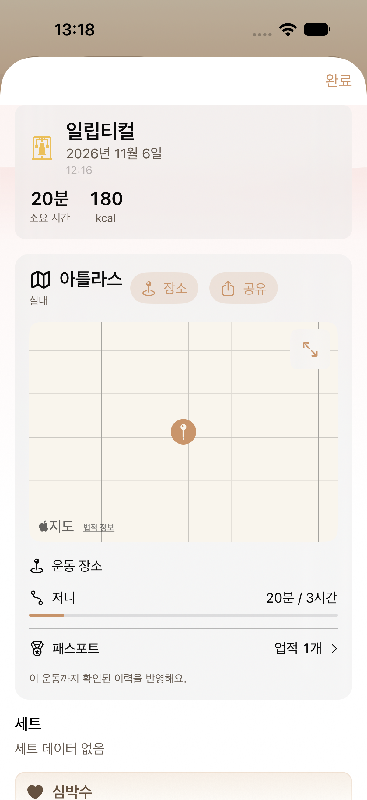
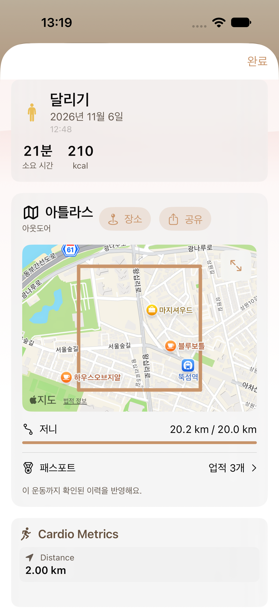
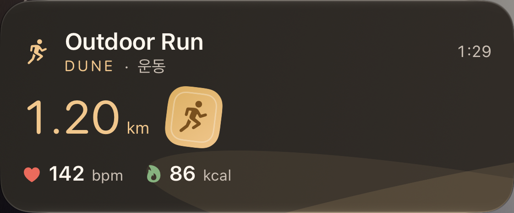
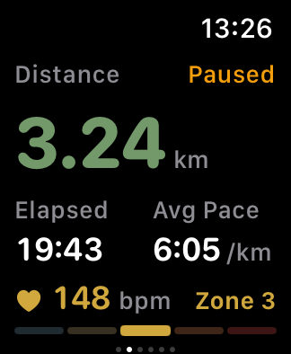
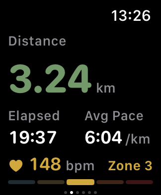
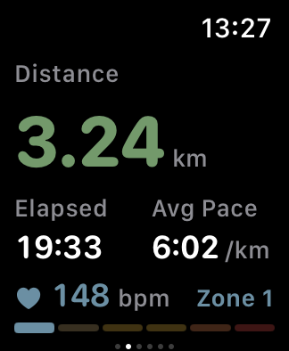
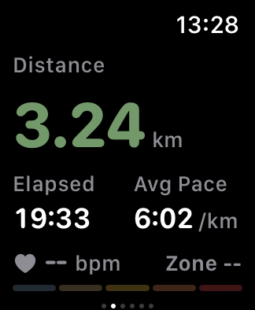

← 통합 실제 화면맵운동 화면 개선 · 2026-11-06
라이브 액티비티는 카드 본체의 위 20pt·아래 약 20pt 여백을 확인했습니다. 워치 거리 화면은 승인된 V2(현재 존 번호 + 구간 막대)를 적용합니다. 실내 유산소는 실제로 얻은 위치 한 점을 운동 기록에 저장해 지도에 표시합니다.
아래는 네이티브 앱·시스템의 새 XCTest 캡처입니다. 운동 수치와 지도 좌표는 검증용 fixture이며 사용자 운동 기록이 아닙니다. 실내 GPS 수신과 Watch → HealthKit → iPhone 실제 동기화는 실기기 확인이 필요합니다. iPad·Duo·Island·Watch small/Always-On·큰 글씨는 이번 실행 범위에 포함하지 않았습니다.
이미지별 기기·시각·결과 번들 · 실측 여백 · 승인 시안

실내 유산소 · 자동 위치 핀 (좌표 fixture)CardioAtlasUITests/testIndoorAutomaticPlacePin()
기존 실외 경로 · 회귀 확인CardioAtlasUITests/testRecordedRouteDetailAndProgress()
WLA01 · 거리 우선 · 상하 20ptWatchWorkoutLiveActivityUITests/testGoldCardioDistancePresentation() WLA01 · 시간 우선 · 상하 20ptWatchWorkoutLiveActivityUITests/testRunningNotificationCenterPresentation()
WLA01 · 시간 우선 · 상하 20ptWatchWorkoutLiveActivityUITests/testRunningNotificationCenterPresentation()
40mm 러닝 · 일시 정지WatchWorkoutFlowSmokeTests/testRunningDistanceMetricsAndPausedDesignMap()
40mm 러닝 · 거리·시간·현재 존WatchWorkoutFlowSmokeTests/testRunningDistanceMetricsAndPausedDesignMap()
40mm 러닝 · HealthKit 6개 구간의 존 1WatchWorkoutFlowSmokeTests/testRunningDistanceShowsPersonalizedZoneCount()
40mm 러닝 · 심박·존 미수신WatchWorkoutFlowSmokeTests/testRunningDistanceWithoutHeartRateShowsNoZone()